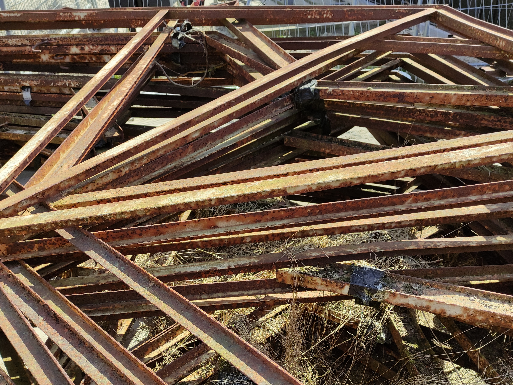
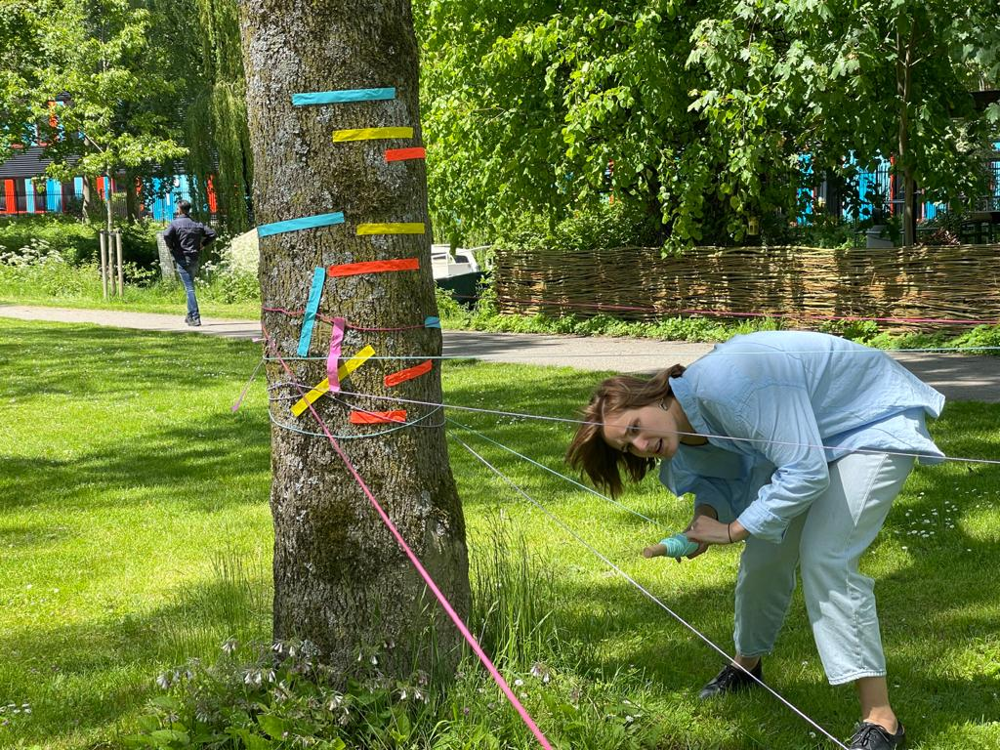

❮
❯
2020 - Berlijnplein
Leidsche Rijn is a neighbourhood in Utrecht, the Netherlands, that is still under construction. The goal of this project is giving the people who live at Leidsche Rijn a chance to change something, instead of that everyone around them gets changed. it also bonds the relationship between the people living there.
De location is Berlijnplein. Here there were rafters laying around from some old buildings. This I have used to create this concept.